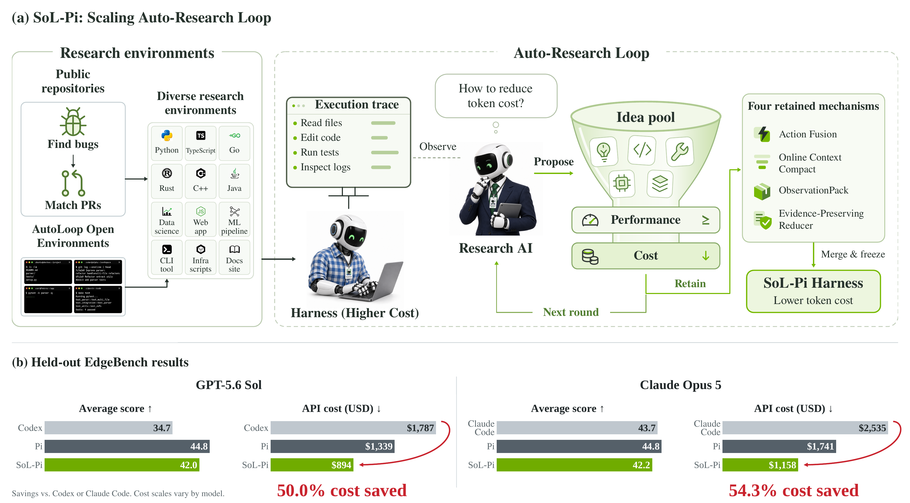
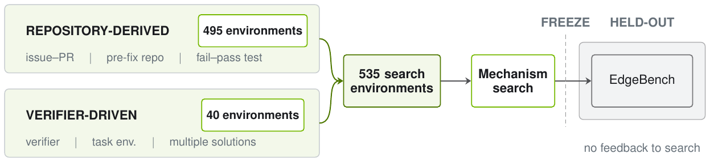
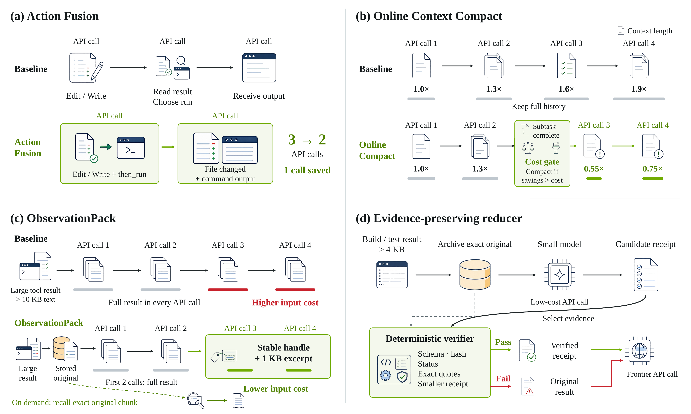
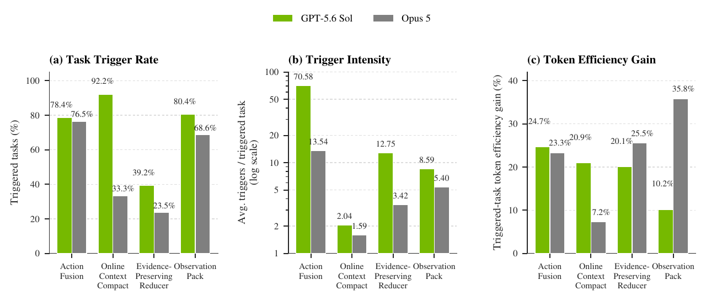
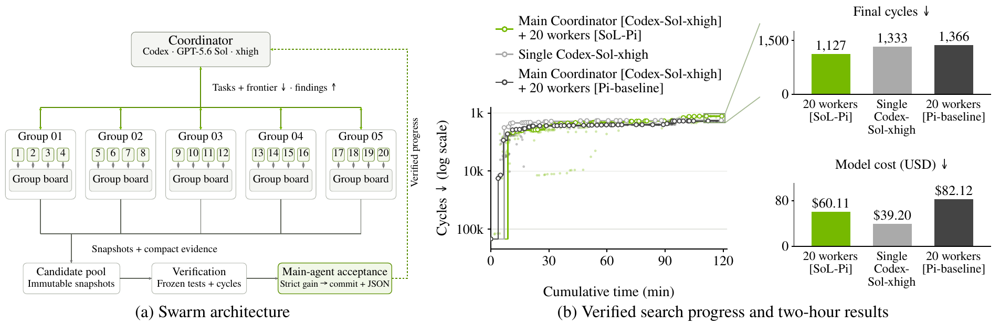

1 · Observe
收集基线 Harness 的执行轨迹，定位重复动作、上下文压力、大型观测和薄弱诊断信号。
SoL-Pi: Recursively Scaling Auto-Research Loops for Efficient Agent HarnessHaozhe Liu、Tian Ye、Sensen Gao 等 14 位作者 · NVIDIA、NTU、MIT · 2026-09-17
这篇论文最重要的概念移动，不是提出一种新的 Context Compression，而是把 Auto-Research 的搜索对象从代码、模型、算法与超参数，推进到承载 Agent 行为的整个 Harness。
传统 Auto-Research 通常把 Agent 当作研究者：它修改目标代码、训练配置或算法实现，再通过实验结果获得反馈。SoL-Pi 把视角反过来——如果 Agent 的表现由“模型 + Harness”共同决定，那么研究者是否也能修改自己赖以行动的运行系统？这里的 Harness 不只是 System Prompt，而是 context 管理、工具接口、observation 处理、delegation、progress control、prompt / policy 与 execution loop 的组合。
因此，论文真正的问题可以写成：能否从大量 Agent Trajectory 中自动识别反复出现的系统性低效，把它们转化为可执行的 Harness Hypothesis，再经过实现、评审、多环境 Rollout 和成本—能力验证，沉淀成跨任务复用的系统机制？Token 效率是这次搜索采用的目标，但“让 Auto-Research 研究 Agent System 自身”才是更上位的研究定位。
这一区分很重要。上下文压缩方法通常预先认定问题位于历史太长；手工 Harness Engineering 则由人观察轨迹、修改工具和规则；任务特定 Harness Evolution 可能把某个 Benchmark 的反馈直接写进 Prompt 或代码。SoL-Pi 希望得到的不是更短的一段文本，也不是某项任务的定制策略，而是从多环境重复模式中发现的 Harness Primitive。
下面的比较用于定位研究对象，而不是给方法排总名次。SoL-Pi 与 Meta-Harness、AHE 等工作的距离最近；它的特征是把多环境搜索、任务级 Token 成本和能力约束同时放进 Harness Evolution。
| 研究路线 | 被优化的对象 | 反馈主要来自 | 最终沉淀 | 与 SoL-Pi 的关系 |
|---|---|---|---|---|
| 常规 Auto-Research | 代码、模型、算法、超参数 | 任务得分、Loss、验证器 | 更好的目标程序或模型配置 | SoL-Pi 把同一研究循环转向执行 Agent 的外围系统 |
| ACON / Context-Folding / AgentFold | 历史与 Observation 的压缩、折叠和主动管理 | 失败分析、监督学习或强化学习 | 更小且更保真的活动上下文 | 属于单一 Harness 维度；SoL-Pi 的搜索空间还覆盖 action、tool、delegation 与 execution loop |
| AutoHarness / RHI | 环境定制代码防护或任务特定 Prompt Loop | 少轮环境反馈或版本成对比较 | 定制 Harness / Prompt 规范 | 同样自动改 Harness，但更强调环境或任务内适应 |
| Meta-Harness / AHE | Harness 代码、组件、工具、中间件与记忆 | 历史候选、分数、轨迹与分层可观测证据 | 端到端优化且可迁移的 Harness | 最接近；SoL-Pi 进一步突出多环境规模、Token 经济性与冻结后的单向验证 |
来源：SoL-Pi Introduction / Related Work 及各相邻工作的原论文。不同工作的任务与指标不可直接做数值比较。
所以，四个具体机制不是论文的第一层贡献，而是对核心命题的经验性证明：Auto-Research 不仅能产生一个补丁或一段 Skill，还能从轨迹中发明新的运行时原语。论文由此把“Agent 学会了什么”扩展为“Agent 所处的系统应该如何变化”。
SoL-Pi 把 Harness Evolution 组织成多层研究循环：外层扩展假设覆盖面，内层沿独立谱系反复实现、实验、分析和修订，直到候选被淘汰或冻结。
搜索从已有执行轨迹开始。Oracle Analysis 不直接提出“再压缩一点”之类泛化建议，而是寻找可定位的系统开销：相邻动作是否高度稳定、上下文何时增长、哪些大型 Observation 会反复进入后续请求、诊断证据是否被长日志淹没。每个 Research Direction 都必须同时指出开销来源与可能改变的 Harness 边界。
Broad Search 负责探索空间。论文从 context、progress、tools、delegation、prompt / policy、improvement / evaluation 六类来源生成 152 个方向，先判断哪类问题具有足够大的机制空间，而不是一开始就围绕某个手工假设微调阈值。广度的意义在于增加发现不同类型系统规律的概率。
Deep Search 负责把一个方向变成可靠机制。每条谱系反复执行 Hypothesis → Implementation → Experiment → Analysis → Revision；实现者要满足明确完成条件，独立 Reviewer 再检查改动。一次实验可产生多条轨迹，独立 Analyzer 分别定位重复动作、上下文增长或诊断缺口，Reducer 汇总为下一轮提案依据。
“Recursive” 体现在多个嵌套层级：Agent 在环境中迭代解决任务，Research Agent 根据轨迹迭代机制，同一机制又在多轮实现—评审—验证中逐渐稳定；成功机制合并进更高效的 Harness 后，还可以成为下一轮 Auto-Research 的起点。论文实验证明的是前面几层搜索流程，最后这一层“更高效 Harness 继续寻找更高效 Harness”仍是未来愿景。
流程中的关键不是让研究 Agent 无限尝试，而是让每条谱系可隔离、可停止、可审查。Broad 阶段问“哪里值得研究”，Deep 阶段问“这个机制能否稳定实现并通过证据门槛”，两者共同避免把预算全压在最早出现的局部想法上。
收集基线 Harness 的执行轨迹，定位重复动作、上下文压力、大型观测和薄弱诊断信号。
把观察转成可证伪的 Harness Hypothesis，明确修改位置、预期收益与能力风险。
实现候选并由独立 Reviewer 检查；未达到完成条件的版本返回修订。
在固定环境中运行，多 Analyzer 分析轨迹，结果再汇总为下一轮修改依据。
所有能力指标必须落在事先声明的容差内，防止把少做任务误认成效率。
至少一项成本或 Token 指标改善，并在合格候选中保留非支配点。

左侧环境产生多样轨迹，中间 Research AI 提出候选并通过 Performance 与 Cost 门槛，右侧保留机制合并为 SoL-Pi；冻结后才进入 EdgeBench。
阅读要点：“Scaling” 同时包含搜索广度与谱系深度。论文报告 152 个方向、3000+ 次运行和 6 万+ 次 Agent—环境交互，但没有建立投入规模与收益之间的 Scaling Law。
SoL-Pi 的关键基础设施不是某个 Prompt，而是 535 个多样、可执行、可自动验证的研究环境。作者的核心假设是：只有跨越足够多环境仍反复出现的交互模式，才更可能成为可迁移 Harness 机制。
如果只在几十个公开 Benchmark Case 上改 Harness，优化器很容易学到题集结构、验证器偏好或固定工作流。Harness 又直接控制工具、上下文、终止和恢复，因此这种过拟合比普通 Prompt Tuning 更隐蔽：分数可能上升，但改动并未形成可以跨仓库复用的系统规律。
论文因此构造两类研究环境。495 个 Repository-derived Environment 来自 GitHub issue–PR 对：保留修复前代码和离线依赖，向 Agent 隐藏已合并补丁与回归测试，并确认测试在补丁前失败、补丁后通过。它们提供真实软件变更中的多语言、多仓库与多工具轨迹。
另外 40 个 Verifier-driven Environment 先定义可执行成功条件，再围绕验证器构造任务。这类环境不要求复现某个参考 Patch，允许多条有效解法，用来补充仓库历史无法覆盖的开放式问题。两类环境共同承担“发现规律”，EdgeBench 则被留到机制冻结后承担“检查迁移”。

左侧两类环境只为机制搜索提供反馈；机制源码、配置与接受规则冻结后，才进入右侧 EdgeBench。Held-out 结果不返回搜索循环。
阅读要点：逻辑链是 Environment Diversity → recurring interaction pattern → reusable mechanism。论文展示了这条路线可行，但没有控制环境数量与多样性、绘制泛化收益曲线，因此它仍是方法假设而非已经建立的 Scaling Law。
这套环境设计同时解决三件事：真实任务提供自然轨迹，多解验证器避免把“唯一 Patch”误当能力，搜索—评测隔离减少 Benchmark Hack。三者缺一，自动研究都可能把局部反馈错误地固化进 Harness。
Issue 提供任务语义，pre-fix repository 提供初始状态，fail-before / pass-after 测试提供可执行证据。
Verifier-driven 环境只规定成功条件，不要求复制参考轨迹，使优化器能观察不同策略下的共同开销。
每个方向在一次性研究实例中独立演化；失败实现与临时编排代码不会污染其他机制。
EdgeBench 结果只接受或拒绝冻结候选，不触发针对性修补，从因果上切断验证反馈回流。
评测口径仍需谨慎：EdgeBench 公开 51 个任务，其中 11 个用于冻结候选的一次性接受，余下 40 个用于最终泛化评估；论文主表报告 51 个任务的总体结果。因此，11 个任务和 40 个任务的证据角色并不完全相同。论文也没有与简单 Test-time Scaling 做严格等反馈、等推理预算对照。
四个最终机制最值得学习的不是具体阈值，而是它们如何把轨迹观察变成运行系统的结构变化：压缩交互拓扑、对 Context 做成本决策、把 Observation 外置成可寻址对象，以及只委派阅读而不委派推理。

绿色表示机制路径与预期节省，红色表示额外成本或验证失败。共同设计原则是：信息可以延迟、外置或压缩，但必须保留可取回、可验证或退回原文的路径。
阅读要点：SoL-Pi 不是“统一摘要一切”。它先区分开销发生在哪个系统边界，再为每类开销设计不同的触发条件和失败回退。
从系统角度看，四个 Mechanism 分别改变不同的信息流。Action Fusion 减少模型回合；Online Compact 决定何时值得重写 Context；ObservationPack 改变大输出的存储位置；Reducer 改变谁负责从日志中找证据。
基线常执行 edit → 模型读取结果 → 决定 run test；新工具把修改与确定性的后续命令合并，典型流程从 3 次 API 调用降到 2 次。需要先检查修改结果时仍保持分离。
在计划步骤完成的语义边界估计剩余请求、增长速率与缓存重写成本；只有 Future Saving > Rewrite Cost，或接近窗口上限时才压缩。
超过 10 KiB 的输出先归档，前两次请求发送全文；从第三次起改为稳定句柄、原始大小和 1 KB 头尾摘录，需要时再精确分页取回。
低价模型从至少 4 KiB 的构建 / 测试日志中提取证据；确定性验证 schema、hash、exit status 与 exact quote。验证失败、疑似凭据或未缩短时退回原文。
Reducer 先处理工具结果，ObservationPack 再决定投影到主模型 Context 的形式；后者识别已经验证的 Receipt 并跳过再次打包。文件读取和搜索结果不进入 Reducer，辅助模型只负责选证据，主 Agent 仍负责诊断和决策——也就是 delegate reading, not reasoning。
论文同时报告两种工作点：SoL-Pi [Efficiency] 是固定四机制完整栈；SoL-Pi [Performance] 则在每个后端上选择平均分最高的单机制配置。前者追求最低绝对成本，后者追求最高任务分数，不能混成一个“最好版本”。
在 EdgeBench 的 GPT-5.6 Sol 结果中，完整栈相对 Pi 将总 Token 流量从 2.1538B 降到 1.0990B，下降 49.0%；API 成本从 1339 美元降到 894 美元，下降 33.2%；平均分从 44.833 降到 42.003，即保留 93.7%。ObservationPack 单独使用时平均分升至 47.208，同时 Token 流量低 6.1%，是该后端的性能配置。
在未参与搜索的 Opus 5 后端，完整栈不经再搜索直接迁移：相对 Pi 的 Token 流量下降 44.7%，成本下降 33.5%，平均分保留 94.3%。不过最高分来自 Action Fusion（50.482），而最佳成本/分数比来自 ObservationPack（0.4899 美元/score）。这说明“完整栈成本最低”不等于“完整栈在所有归一化指标上最优”。
| 后端 / 配置 | 总 Token 流量 (B) ↓ | API 成本 ($) ↓ | 平均分 ↑ | 成本 / score ($) ↓ |
|---|---|---|---|---|
| GPT-5.6 Sol · Pi | 2.1538 | 1,339 | 44.833 | 0.5855 |
| GPT-5.6 Sol · SoL-Pi [Efficiency] | 1.0990 | 894 | 42.003 | 0.4174 |
| GPT-5.6 Sol · +ObservationPack [Performance] | 2.0224 | 1,271 | 47.208 | 0.5280 |
| Opus 5 · Pi | 2.3697 | 1,741 | 44.756 | 0.7625 |
| Opus 5 · SoL-Pi [Efficiency] | 1.3101 | 1,158 | 42.224 | 0.5376 |
| Opus 5 · +Action Fusion [Performance] | 2.1016 | 1,605 | 50.482 | 0.6235 |
来源：论文 Table 2。↑ 越高越好，↓ 越低越好；价格按论文所用的 2026-08-17 API 价格计算。
单组件消融把“哪个机制更有效”拆成三类答案：最低绝对成本、最高平均分、以及最低单位得分成本。结果随后端变化明显，支持迁移的同时也显示了搜索后端依赖。
| 配置 | Sol 分数 ↑ | Sol 成本 ($) ↓ | Sol $/score ↓ | Opus 分数 ↑ | Opus 成本 ($) ↓ | Opus $/score ↓ |
|---|---|---|---|---|---|---|
| Pi Baseline | 44.833 | 1,339 | 0.5855 | 44.756 | 1,741 | 0.7625 |
| + Action Fusion | 46.664 | 1,235 | 0.5190 | 50.482 | 1,605 | 0.6235 |
| + Online Context Compact | 41.993 | 935 | 0.4365 | 49.155 | 1,537 | 0.6130 |
| + Evidence-Preserving Reducer | 44.630 | 1,200 | 0.5274 | 43.405 | 1,456 | 0.6578 |
| + ObservationPack | 47.208 | 1,271 | 0.5280 | 47.047 | 1,176 | 0.4899 |
| 完整四机制栈 | 42.003 | 894 | 0.4174 | 42.224 | 1,158 | 0.5376 |
来源：论文 Table 4。每个组件行都是在 Pi 上单独增加一个机制；完整栈不是逐行累加实验。

Online Context Compact 的任务触发率从 Sol 的 92.2% 降至 Opus 的 33.3%；Action Fusion 的平均触发强度从 70.58 降至 13.54。相反，ObservationPack 在 Opus 触发任务上的效率增益达到 35.8%。
谨慎解读：效率增益是在各配置自己的“触发任务子集”上计算，不同柱子不是完全相同的任务集合，适合描述机制行为，不能直接当作严格因果交互效应。
Terminal-Bench 4 的 63 个 CPU 任务上，Codex 与 Pi 都解出 18 个，SoL-Pi 只解出 15 个；与此同时，SoL-Pi 相对 Pi 的总模型成本低 26.3%，每个解出任务成本低 11.6%。这不是“同等能力纯降本”，而是明确的解题率—成本交换。IMO 2026 的 6 道 Lean 4 验证题中，SoL-Pi 与 Pi 都通过 3 道，SoL-Pi 总成本更低；Codex 通过 5 道，但总成本最高。
| Harness | TB4 解出 / 63 ↑ | TB4 总成本 ($) ↓ | TB4 每题成本 ($) ↓ | IMO 通过 / 6 ↑ | IMO 总成本 ($) ↓ | IMO 每题成本 ($) ↓ |
|---|---|---|---|---|---|---|
| Codex | 18 | 272.35 | 15.13 | 5 | 114.47 | 22.89 |
| Pi | 18 | 286.45 | 15.91 | 3 | 75.95 | 25.32 |
| SoL-Pi | 15 | 211.12 | 14.07 | 3 | 62.69 | 20.90 |
来源：论文 Table 3。TB4 排除依赖 GPU 的任务；IMO 均使用 GPT-5.6 Sol (xhigh)，单题上限 150 分钟。

SoL-Pi 集群达到 1,127 cycles，优于单 Agent 的 1,333 和 Pi 集群的 1,366（越低越好）；成本为 60.11 美元，低于 Pi 集群的 82.12，但高于单 Agent 的 39.20。
谨慎解读：每种配置只运行一次两小时实验，没有多次重复或不确定性估计。它展示了一个有希望的系统案例，不能据此推断稳定的集群平均收益。
论文最重要的实验结论不是“完整 SoL-Pi 赢了”，而是 Performance、Token 与 Cost 之间存在多目标权衡：完整栈更省，某些单机制配置却能同时降低成本并提高分数。
在 GPT-5.6 Sol 上，完整四机制栈相对 Pi 将 Token 流量降低 49.0%、成本降低 33.2%，但平均分从 44.833 降到 42.003；ObservationPack 单独使用则把平均分提高到 47.208，同时 Token 流量低 6.1%。在 Opus 5 上，Action Fusion 得到最高平均分 50.482，而 ObservationPack 得到最佳成本 / 得分 0.4899 美元。机制数量因此不是单调收益变量。
这意味着未来 Harness Auto-Research 不应寻找唯一“最佳 Harness”，而应搜索 Pareto Front：在给定能力下最低成本、在给定预算下最高性能，或在部署约束下最稳定的触发组合。论文的 Capability Gate + Efficiency Gate 已经体现这一思想，但最终完整栈仍是作者选定的效率工作点，不是对所有使用场景的普遍最优解。
如果把整篇论文再压缩一层，真正值得迁移的是下面三个大思想。它们分别回答研究对象、泛化来源和自进化产物三个问题，四个具体 Mechanism 则是这些思想的实例。
Harness 与模型共同决定 Agent 行为，因此运行系统本身也应成为可观察、可修改、可验证的研究对象。
从大量异质可执行环境中寻找 recurring pattern，比在少量公开题目上反复调参更可能得到可迁移机制。
轨迹不仅能蒸馏成 Memory / Skill，还能编译成新的 Tool Primitive、Context Policy 与 Observation Protocol。
Performance、Token 与 Cost 必须联合优化；部署时应按预算和能力容差选择工作点，而不是默认全开。
首先，Harness 只从 GPT-5.6 Sol 轨迹更新，Opus 5 上四个机制的触发率和强度普遍下降。尽管触发任务上的效率仍有改善，这表明机制何时启动与底层模型行为强相关。作者将多后端训练列为未来方向，而当前证据只能支持“在一个额外后端上初步迁移”。
其次，完整自动研究循环成本高，论文没有在固定预算下系统比较搜索广度与深度，也没有给出搜索本身的总计算成本与净回收期。搜索用了 535 个环境、3000+ 次运行和 6 万+ 次交互，但这些投入是否优于更小的人工工程团队或更窄的搜索空间，仍无对照实验。
再次，核心数值多为单次点估计。论文没有报告 EdgeBench 多随机种子方差或显著性；集群实验每种配置仅运行一次；API 成本还依赖 2026-08-17 的价格。因而复现时应同时记录任务得分、总 Token、缓存读写、模型价格、机制触发情况和失败回退，而不能只复核一张成本表。
如果要把论文转成自己的 Harness 工程计划，最值得迁移的不是四个具体阈值，而是“可逆、可验证、可归因”的设计原则。优先测量浪费，再引入最小机制，并为压缩失败与信息需求保留明确退路。
在论文设置中，完整栈在 Sol 与 Opus 上均显著降低记录到的 Token 流量和 API 成本；单机制还能在特定后端提升平均分或单位得分效率。
跨更多模型与真实生产工作流的稳定收益、搜索规模定律、长期净成本回收，以及用 SoL-Pi 继续搜索是否会产生递归复利。
主要来源：Haozhe Liu 等，SoL-Pi: Recursively Scaling Auto-Research Loops for Efficient Agent Harness，arXiv:2609.20519v1，提交于 2026-09-17。本文依据论文 PDF、作者公开源码与项目页整理，未独立运行代码或复现实验；派生百分比均按论文表格点估计计算。
↑ 返回顶部